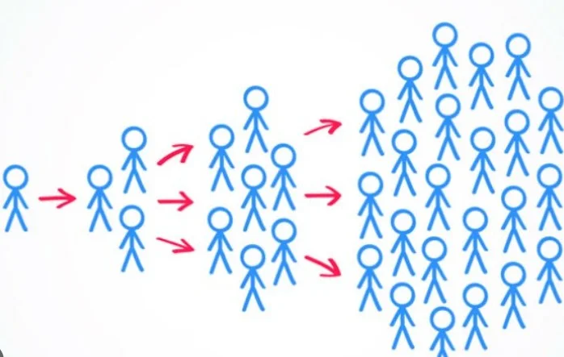
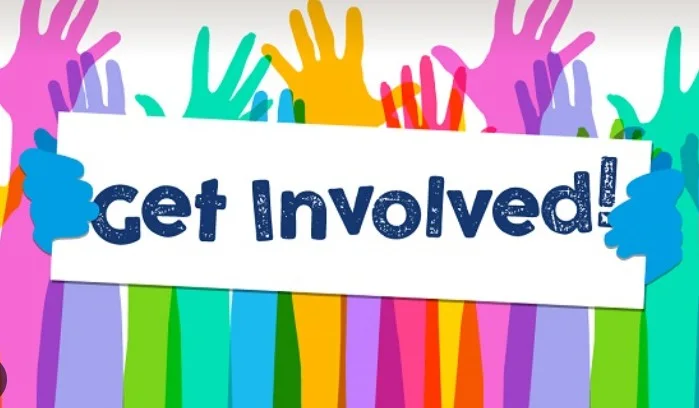
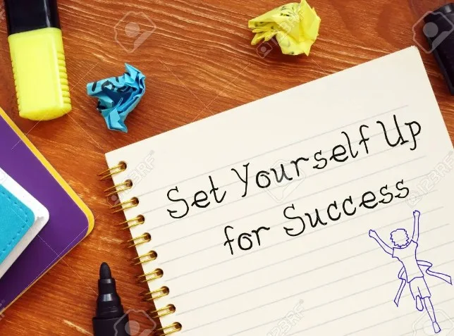

Preserving cultural heritage
Lesson 4 — Speaking
6Action + reason + benefit
- 🛠️
explain ways to preserve cultural heritage
- 💬
keep a conversation going
- 📋
discuss a practical plan for one tradition
Warm-up
Jumble words
5 minutesUnscramble the heritage words
1. U / C / O / K / F / I / M / L / S (2 words) FOLK MUSIC
2. R / A / S / W / E / S / E / N / A AWARENESS
3. L / I / O / M / S / E / D / A / C / I / A (2 words) SOCIAL MEDIA
4. N / E / C / M / I / P / O / T / T / O / I COMPETITION
5. L / A / E / F / S / I / V / T FESTIVAL
Ideas and a model
Words · Tasks 1–2
13 minutes



Reasons a–d
a. Spreading information to more people quickly
b. Helping students understand the value of cultural heritage
c. Making cultural heritage more widely known to people around the world
d. Encouraging people to get more involved
Ways 1–4
1. Learning about cultural heritage at school b
2. Promoting cultural heritage on social media a
3. Organising competitions to find good ideas for preserving our heritage d
4. Introducing cultural heritage to foreign visitors through tourism activities c
A. Well · B. Right · C. Really · D. Let me think
Then practise it in pairs.
Tips · page 71
Show interest: Yeah, Uh huh, OK, Right, I see, Interesting, Really
Think before speaking: Well, Let me think, I’m not sure, Hold on a minute, That’s a good question
A, B, C or D?
A, B, C or D?
A, B, C or D?
How does it end?
Your conversation
Task 3 · pairs
12 minutesKeep the conversation going
Keep the conversation going
Ideas from Task 1
- 🏫
At school
learn about cultural heritage
- 📱
Online
promote it on social media
- 🏆
Competitions
find good ideas
- 🧳
Tourism
introduce it to foreign visitors
Group plan
Task 4 · discuss and report
12 minutesHeritage action plan
- 🎶
Choose
quan ho, ca tru, a local festival, pottery, a craft …
- ⚠️
The problem
Why might it be forgotten?
- 🛠️
The action
set up a club · organise events · invite artists · make videos
- 🌱
The benefit
Who benefits? How will it be passed on?
We chose …
We chose … because it is important to our culture.
First, we will … We should also …
This will help …
Strong discussion = action + reason + benefit
- 💬
Right. · Really? · Let me think.
- 🛠️
set up clubs · share online · hold competitions
- 🏛️
raise awareness of our heritage
Homework
1. Do the Speaking exercises in the workbook.
2. Write your group’s heritage plan in 5 sentences.
3. Get ready for Lesson 5 — Listening.